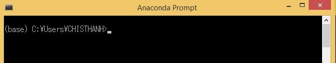
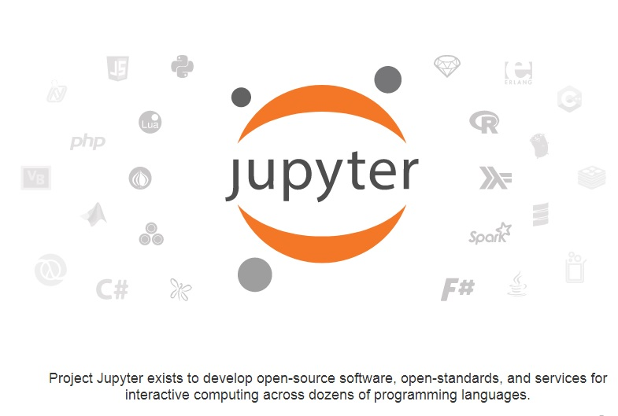

記事掲載：https://laptrinhcanban.com/ja
Pythonを実行するため実行環境が必要です。この記事ではPythonのコードの直接実行する4つの方法について説明します。
Pythonの実行環境の選択
Pythonを実行するには、 Pythonコードをインポートして実行できるようにPython環境を作成するソフトウェアが必要です。Pythonプログラミング環境を作成するためのプログラムはたくさんありますが、以下から1つを選択すればと思います。
コマンドプロンプト
DOSプラットフォームでPythonコードを直接実行するのに役立つWindows組み込みプログラムです。コンピュータでコマンドプロンプトを起動する方法でコマンドプロンプトを起動する方法を参照できます。
コマンドプロンプトを使用してPythonコードを直接に実行するだけでなく、ファイルに保存されたPythonプログラムを実行することもできます。Pythonプログラムを保存して実行する方法についてはこの記事を参照することができます
ただし、コマンドプロンプトでPythonを実行できるようにするには、コンピューターにPythonをインストールし、WindowsのPATH変数にPythonを追加した必要があります。

尚、コマンドプロンプトをWindowsPowerShellに置き換えることもできます。これらのソフトウェアは両方とも、Pythonコードを直接実行するためのDOSプラットフォームを提供します。
Anaconda Prompt
Anacondaは、コマンドを入力してPythonコードを直接実行するのに役立つプログラムです。これはAnaconda Pythonをインストールする時に統合されるソフトウェアです。
Anacondaを使用してPythonをインストールした場合は、[スタート]メニューの[プログラム]タブで[Anacondaプロンプト]アイコンを探してこのプログラムを開始するか、Windowsキーを押してから[Anacondaプロンプト]行を入力してプログラムを見つけることができます。次に、アイコンをクリックして起動します。

コマンドプロンプトと同様に、アナコンダプロンプトを使用して、ファイルに保存されたPythonプログラムの実行も出来ます。あなたは記事Pythonプログラムを書く方法、Pythonプログラムを保存して実行する方法を参照することができます。
Jupyter-NoteBook
Google ChromeやCoccoc、Firefoxなどのブラウザーで直接作業することに慣れている場合は、Jupyter NoteBookを使用できます。これは、Anacondaのインストール時に統合されたブラウザーでPythonコードを直接実行するのに役立つソフトウェアです。
ステートメントと実行結果の両方をログまたはグラフとして保存する機能を備えたJupyterを使用すると、作成中のプログラムを再度開くときに時間を節約できます。

スタートメニューの[プログラム]タブでアイコンを探すと、AnacondaPromptと同様にJupyterを起動できます。
paiza.ioなどWeb上でPythonを実行
paiza.ioとはPythonを含めさまざまな言語で記述されたプログラムを実行するオンラインプラットフォームです。コンピューターにPythonをインストールしていない場合は、このWebサイトでオンラインで実行することもお勧めします。

本サイトlaptrinhcanban.comではpaiza.ioを使用してプログラムの説明を行っています。各記事の左側にある</>へクリックすると「Run Code Online」のウィンドウは表示され、プログラムのオンライン実行ができるので、是非ご利用ください。
Pythonの実行方法
Pythonコードを直接実行する
記のソフトウェアのいずれかを起動すると、Pythonプログラミング環境が出来上がります。これで、ソフトウェアの画面上にPythonコード行を入力し、Enterを押して実行することで、Pythonコードを直接実行ができます。たとえば、次のコマンドラインを使用してPythonのバージョンを確認できます。
python --version |
以下に示すように、Pythonコマンドの入力画面とAnacondaPromptソフトウェアで返される結果を見てみましょう。
Python 3.7.6 |
対話モードでPythonを実行する
Pythonには、対話モードと呼ばれるモードがあり、直接入力したコマンドラインをすばやく実行し、プログラムファイルを保存せずに結果をすぐに画面に出力できます。コマンドプロンプトまたはアナコンダプロンプトを開始した後、次のコマンドラインでインタラクティブモードを開始します。
python |
対話モードのデータ入力画面が表示されます。次に、変数に値を割り当ててそれを使用して計算し、結果を次のように画面に出力するなど、いくつかの簡単なPythonコードを実行してみましょう。
num = 20 |
変数を含む計算結果はすぐに表示されます。
>>> num = 20 |
- 参照: Python対話モードの使用方法
ファイルに記述したPythonプログラムを実行
sample.pyファイルにPythonコードの行が記述され、保存されています。このファイルでPythonプログラムを実行したいのですが、それでも方法がわかりませんか？
D:¥user¥sample.pyのフォルダの直下にsample.pyファイルがあると仮定します。
D:¥ ├---user ├ ├--- sample.py
このファイルに記述されているPythonプログラムを実行するには、コマンドプロンプトまたはアナコンダプロンプトを起動したcd/d <folder_path>の後、次のコマンドで実行するPythonファイルを含むディレクトリに現在のディレクトリを移動する必要があります。
cd/d D:¥user |
次に、以下のコマンドを使用してsample.pyファイルに記述したPythonプログラムを実行すればと思います。
python sample.py |
まとめ
上記で、KiyoshiはPythonコードを直接実行する4つの方法を示しています。レッスンの内容をよりよく理解するために、各例文を使って練習してください。
そして、次のレッスンでPythonの知識についてもっと学びましょう。
URL Link
ホーム › 初心者向けのpython学習>>03. pythonの基礎知識